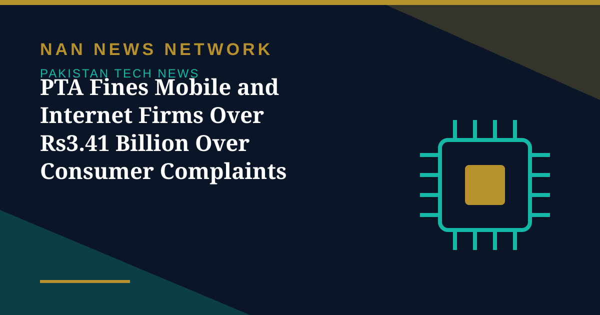

PTA Fines Mobile and Internet Firms Over Rs3.41 Billion Over Consumer Complaints

Pakistan's telecom regulator has reportedly imposed fines of more than Rs3.41 billion on mobile phone companies and internet service providers over consumer complaints, according to reports published on October 29, 2026. The action forms part of continued enforcement against poor service quality, the reports said.
Expansion ordered alongside the fines
Each company has reportedly been instructed to install 1,000 new sites annually to improve network coverage and service quality. An additional 480 MHz of spectrum has also been made available, a move aimed at increasing 4G internet speeds from 14 Mbps to 120 Mbps and enabling speeds of up to 150 Mbps on 5G networks.
Why so many sites are offline
Telecom operators continue to face major operational challenges, with approximately 9,000 mobile sites, accounting for about 17 per cent of the country's total, reportedly remaining non-operational due to electricity load-shedding, right-of-way disputes, power theft and equipment theft from telecom towers. The situation is reported to be particularly concerning in Khyber Pakhtunkhwa, Balochistan and Gilgit-Baltistan, where network infrastructure faces persistent disruptions. The relevant record has also been presented in the National Assembly.
What the regulator says
A PTA spokesperson said the authority was continuing to take action against mobile phone companies and internet service providers in accordance with the law. The spokesperson added that notices and quality-of-service surveys were being used to address poor performance and ensure uninterrupted services for consumers.
For users, the combination of fines and rollout obligations signals a push to pair penalties with physical network improvement, rather than enforcement alone.
Sources: Public news reports, October 2026.
More on Pakistan Tech News
- PTA Warns of Rising 5G Security Risks as Cyber Alerts Top 10,000
- Pakistan Internet May Slow Until November 2 as AAE-1 Cable Undergoes Repairs
- PM Sets November Deadline for Alibaba-Backed AI and Digitalisation Projects
- Pakistan's 5G Now Reaches 24 Cities After $509 Million Spectrum Auction
- Pakistan Announces Urdu AI Model 'Buraq' to Keep National Data at Home
- PM Launches Two-Year Drive to Give 500,000 Chromebooks to Talented Students
- Pakistan to Host UN Space Technology Conference on Early Warnings and Climate Action
- PAK-US Tech Connect 2026 Takes 16 Pakistani Tech Firms Across America
- Pakistan Wins 11 Awards at the ASOCIO Digital and AI Awards 2026
- Pakistan Showcases AI Innovations at Abu Dhabi's AI Everything Global 2026